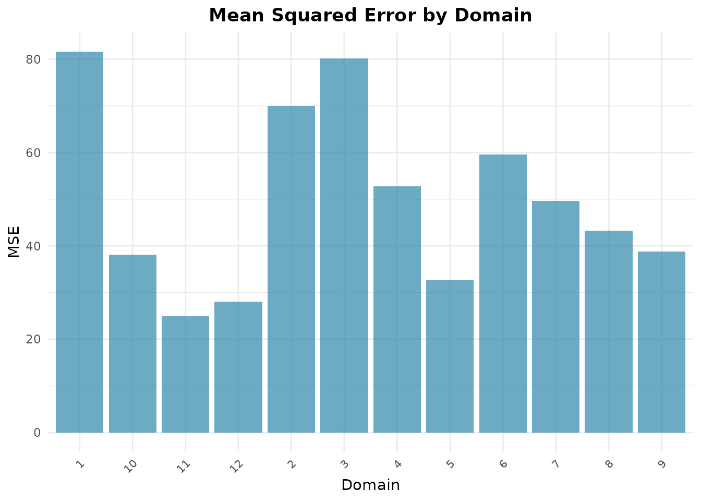
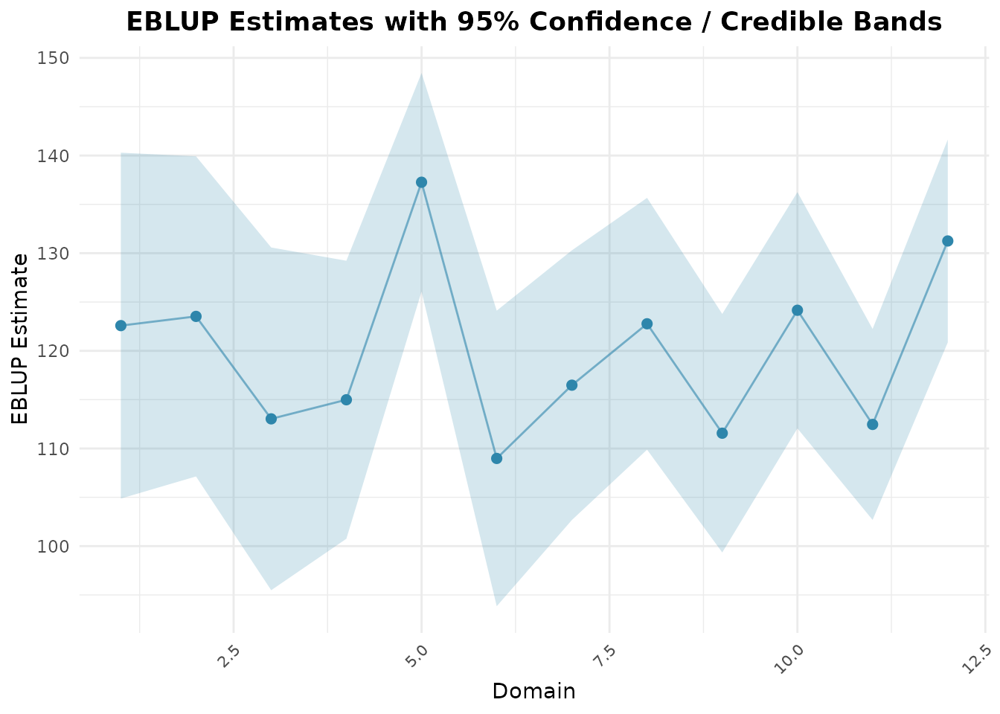

Unit-Level Estimation with Battese-Harter-Fuller
Source:vignettes/articles/id/unit-level-bhf.Rmd
unit-level-bhf.RmdTerjemahan dari versi bahasa Inggris. Penjelasan istilah ada di Daftar Istilah.
Gambaran Umum
Berbeda dengan area-level model yang mengagregasi data sebelum pemodelan, unit-level model bekerja langsung pada rekaman unit survei individu (mis. rumah tangga, lahan pertanian, atau orang) sambil menghubungkannya dengan agregat auxiliary variable populasi (mis. rata-rata sensus atau citra satelit).
Paket fastsae mengimplementasikan nested error
regression model dari Battese, Harter, dan Fuller (1988) melalui
eblup_bhf(), yang menyediakan estimasi cepat dan parametric
bootstrap MSE secara paralel. hb_unit() mengestimasi model
yang sama sebagai hierarchical Bayes model dengan INLA (lihat bagian
terakhir).
Formulasi Model
Untuk unit individu () pada area kecil ():
dengan:
- adalah random effect spesifik area.
- adalah varians error tingkat unit.
- dan saling bebas.
Rata-rata populasi area kecil diestimasi dengan:
dengan:
- adalah vektor rata-rata populasi auxiliary variable untuk domain yang diketahui.
- dan adalah rata-rata sampel untuk domain .
- adalah rasio shrinkage.
Contoh Langkah demi Langkah
1. Persiapan Data
Kita memakai data klasik cornsoybean, yang melaporkan
hektar tanaman jagung per segmen di 12 county di Iowa:
library(fastsae)
data("cornsoybean")
data("cornsoybeanmeans")
# Align column names for population auxiliary means
df_pop <- cornsoybeanmeans
names(df_pop)[names(df_pop) == "MeanCornPixPerSeg"] <- "CornPix"
names(df_pop)[names(df_pop) == "MeanSoyBeansPixPerSeg"] <- "SoyBeansPix"
names(df_pop)[names(df_pop) == "CountyIndex"] <- "County"
head(cornsoybean)
#> County CornHec SoyBeansHec CornPix SoyBeansPix
#> 1 1 165.76 8.09 374 55
#> 2 2 96.32 106.03 209 218
#> 3 3 76.08 103.60 253 250
#> 4 4 185.35 6.47 432 96
#> 5 4 116.43 63.82 367 178
#> 6 5 162.08 43.50 361 137
head(df_pop)
#> County CountyName SampSegments PopnSegments CornPix SoyBeansPix
#> 1 1 CerroGordo 1 545 295.29 189.70
#> 2 2 Hamilton 1 566 300.40 196.65
#> 3 3 Worth 1 394 289.60 205.28
#> 4 4 Humboldt 2 424 290.74 220.22
#> 5 5 Franklin 3 564 318.21 188.06
#> 6 6 Pocahontas 3 570 257.17 247.132. Mengestimasi Model BHF dengan Bootstrap MSE
Kita mengestimasi model dengan eblup_bhf(). Mean Squared
Error (MSE) tingkat domain diestimasi dengan parametric bootstrap
(mse_type = "bootstrap", bawaan;
mse_type = "none" melewatkannya):
fit_bhf <- eblup_bhf(
formula = CornHec ~ CornPix + SoyBeansPix,
unit_data = cornsoybean,
Xpop = df_pop,
domain_var = "County",
popsize_var = "PopnSegments",
method = "REML",
mse_type = "bootstrap",
B = 50,
seed = 123,
print_result = FALSE
)
summary(fit_bhf)
#>
#> ── Summary of fastsae Fit ──────────────────────────────────────────────────────
#> Call :
#> eblup_bhf(formula = CornHec ~ CornPix + SoyBeansPix, unit_data = cornsoybean,
#> Xpop = df_pop, domain_var = "County", popsize_var = "PopnSegments", method =
#> "REML", B = 50, mse_type = "bootstrap", seed = 123, print_result = FALSE)
#>
#> ✔ Convergence: Yes (in - iterations)
#> Model: Battese-Harter-Fuller (Unit-level)
#>
#> Variance Components:
#> sigma2_u: 63.31489
#>
#> Coefficients:
#> beta std.error zvalue pvalue
#> (Intercept) 17.963979 30.974505 0.579960 0.5619
#> CornPix 0.366335 0.064959 5.639511 0.0000
#> SoyBeansPix -0.030364 0.067576 -0.449327 0.6532
#>
#> Goodness of Fit:
#> loglikelihood AIC BIC
#> -159.2759 328.5517 336.6063
#>
#> EBLUP Summary Statistics:
#> mse rse
#> Min. :24.89 Min. :4.039
#> 1st Qu.:36.74 1st Qu.:4.838
#> Median :46.45 Median :5.816
#> Mean :49.96 Mean :5.839
#> 3rd Qu.:62.20 3rd Qu.:6.849
#> Max. :81.65 Max. :7.9213. Memeriksa Estimasi Domain
Data frame df_eblup yang dihasilkan memuat estimasi
domain beserta ukuran sampel, MSE, dan Relative Standard Error
(RSE):
head(fit_bhf$df_eblup)
#> domain eblup samp_size mse rse
#> 1 1 122.5825 1 81.64650 7.371235
#> 2 2 123.5274 1 69.94383 6.770354
#> 3 3 113.0343 1 80.17283 7.921429
#> 4 4 114.9901 2 52.75789 6.316599
#> 5 5 137.2660 3 32.60240 4.159698
#> 6 6 108.9807 3 59.61422 7.0847634. Visualisasi Hasil dengan autoplot
Untuk unit-level model, ketidakpastian domain dan perbandingan model
dapat ditampilkan dengan autoplot():
# Plot MSE across counties
autoplot(fit_bhf, type = "mse")
# Plot EBLUP estimates with confidence intervals
autoplot(fit_bhf, type = "comparison")
Hierarchical Bayes dengan hb_unit()
hb_unit() mengestimasi nested error model dengan INLA
dan menghasilkan posterior mean, standar deviasi, dan credible interval
dari rata-rata county. Fungsi ini membutuhkan paket
INLA, yang tidak ada di CRAN (https://www.r-inla.org/download/); chunk di bawah hanya
dijalankan bila INLA terpasang. Argumennya sama dengan
eblup_bhf():
fit_hbu <- hb_unit(
CornHec ~ CornPix + SoyBeansPix,
unit_data = cornsoybean,
Xpop = df_pop,
domain_var = "County",
popsize_var = "PopnSegments",
print_result = FALSE
)
head(fit_hbu$df_hb[, c("domain", "samp_size", "hb", "sd", "ci_lower", "ci_upper")])
#> domain samp_size hb sd ci_lower ci_upper
#> 1 1 1 122.7313 8.804362 105.47477 139.9879
#> 2 2 1 123.6795 8.656224 106.71329 140.6457
#> 3 3 1 112.3751 9.453466 93.84635 130.9039
#> 4 4 2 114.8302 7.949844 99.24851 130.4119
#> 5 5 3 136.6722 8.598466 119.81918 153.5252
#> 6 6 3 108.7452 7.372621 94.29483 123.1955County demi county, posterior mean mendekati EBLUP:
data.frame(
County = fit_bhf$df_eblup$domain,
n = fit_bhf$df_eblup$samp_size,
eblup = round(fit_bhf$df_eblup$eblup, 1),
hb = round(fit_hbu$df_hb$hb, 1),
rmse_eblup = round(sqrt(fit_bhf$df_eblup$mse), 1),
sd_hb = round(fit_hbu$df_hb$sd, 1)
)
#> County n eblup hb rmse_eblup sd_hb
#> 1 1 1 122.6 122.7 9.0 8.8
#> 2 2 1 123.5 123.7 8.4 8.7
#> 3 3 1 113.0 112.4 9.0 9.5
#> 4 4 2 115.0 114.8 7.3 7.9
#> 5 5 3 137.3 136.7 5.7 8.6
#> 6 6 3 109.0 108.7 7.7 7.4
#> 7 7 3 116.5 116.5 7.0 6.9
#> 8 8 3 122.8 122.6 6.6 6.9
#> 9 9 4 111.6 111.1 6.2 6.9
#> 10 10 5 124.2 124.4 6.2 6.0
#> 11 11 5 112.5 113.3 5.0 7.3
#> 12 12 6 131.3 131.3 5.3 5.7Kedua himpunan estimasi berbeda paling banyak sekitar 1 hektar (di
bawah 1% dari rata-rata county). Root MSE bootstrap dan posterior SD
adalah besaran yang berbeda; di sini SD lebih besar pada 10 dari 12
county (hingga setengahnya lebih besar pada county 5 dan 11), dan dengan
B = 50 bootstrap MSE sendiri masih bising
(noisy).
Prior untuk
adalah half-normal dengan skala respons unit (lihat
vignette("hb-priors")). Dengan 12 county, posterior
masih menceng: posterior mean eksaknya sekitar 100 dan mediannya 68,
dibandingkan estimasi REML sebesar 63, dan ringkasan INLA untuknya
(random_effect_var, 115 pada data ini) tidak akurat. Jangan
membandingkannya dengan estimasi REML dari eblup_bhf().
Estimasi county di df_hb dapat diandalkan:
hb_unit() berjalan dalam mode "classic" INLA,
yang pada data ini sesuai dengan posterior eksak (dihitung dengan
integrasi numerik atas kedua varians) dalam 0,06 posterior SD, dengan SD
dalam 2%.
MCMC dengan engine = jax_engine()
hb_unit(engine = jax_engine()) men-sampling model yang
sama dengan sampler NUTS dari NumPyro sebagai pengganti INLA
(membutuhkan Python dengan ‘jax’ dan ‘numpyro’; lihat
setup_numpyro_env()), lalu meringkas rata-rata county dari
draw MCMC:
fit_hbu_jax <- hb_unit(
CornHec ~ CornPix + SoyBeansPix,
unit_data = cornsoybean,
Xpop = df_pop,
domain_var = "County",
popsize_var = "PopnSegments",
engine = jax_engine(chains = 4, samples = 2000),
print_result = FALSE
)
fit_hbu_jax$rhat_maxEngine ini memakai prior yang sama dengan engine INLA. Pada data ini, rata-rata county-nya berada dalam 0,16 posterior SD dari INLA dan SD-nya 0,98–1,06 kali SD INLA (empat chain masing-masing 2.000 draw, R-hat terbesar 1,002). Perbedaan tersebut adalah Monte Carlo error: terhadap posterior eksak, rata-rata JAX berada dalam 0,14 SD.
County tanpa Sampel
Domain yang ada di Xpop tetapi tidak memiliki baris di
unit_data diprediksi dari regresi dan rata-rata
populasinya, pada kedua fungsi. Misalnya, tanpa sampel county 1:
cs_without_1 <- cornsoybean[cornsoybean$County != 1, ]
fit_hbu1 <- hb_unit(
CornHec ~ CornPix + SoyBeansPix,
unit_data = cs_without_1,
Xpop = df_pop,
domain_var = "County",
popsize_var = "PopnSegments",
print_result = FALSE
)
fit_hbu1$unsampled_domains
#> [1] 1
fit_hbu1$df_hb[fit_hbu1$df_hb$domain == 1, c("domain", "samp_size", "hb", "sd")]
#> domain samp_size hb sd
#> 1 1 0 119.4547 10.52653Rata-rata populasi di Xpop harus lengkap: rata-rata yang
hilang menimbulkan error, karena prediksi county tersebut akan salah.
hb_unit() juga mengestimasi respons binomial dan Poisson
(family) serta efek county spasial
(spatial = "bym2" atau "besag" dengan matriks
proximity W). Untuk respons binomial dan Poisson, rata-rata
county diprediksi pada rata-rata covariate, yang bias untuk link
nonlinear (sebesar -8% dan -16% dalam simulasi; lihat
?hb_unit), dan fungsi memberi peringatan tentang hal
itu.
Daftar Pustaka
- Battese, G. E., Harter, R. M., & Fuller, W. A. (1988). An error-components model for prediction of county crop areas using survey and satellite data. Journal of the American Statistical Association, 83(401), 28–36.
- Rao, J. N. K., & Molina, I. (2015). Small Area Estimation (2nd ed.). John Wiley & Sons.
- Rue, H., Martino, S., & Chopin, N. (2009). Approximate Bayesian inference for latent Gaussian models by using integrated nested Laplace approximations. Journal of the Royal Statistical Society: Series B, 71(2), 319–392.